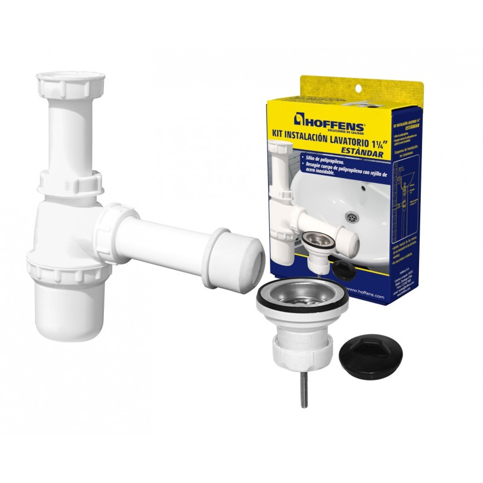

Sifón para lavatorio

Pieza curva que retiene una pequeña cantidad de agua para formar una barrera contra los gases del sistema sanitario. Conecta el lavatorio con el desagüe y facilita las labores de limpieza según su diseño.